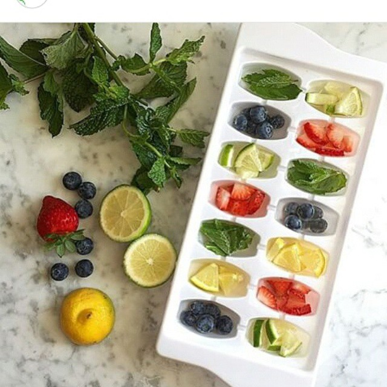
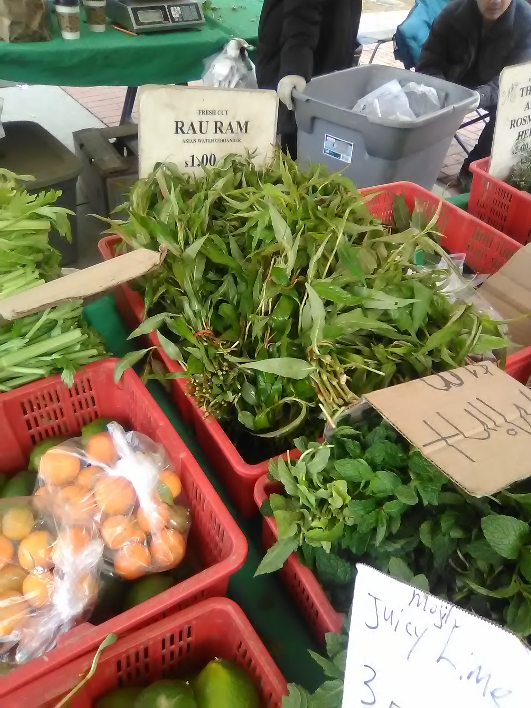

The images below (left) represent a display that I've created of ice cubes infused with various herbs and citrusy fruits as well as (right) fresh herbs purchased from my local farmer's market. The possibilities are endless when it comes to infusion!
 